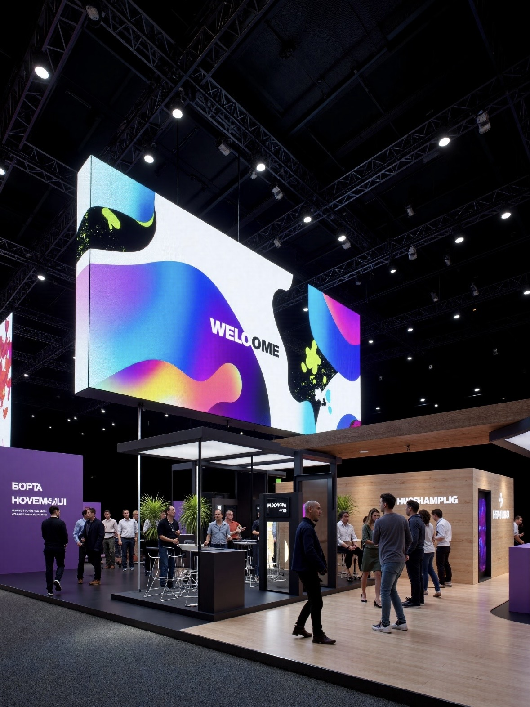
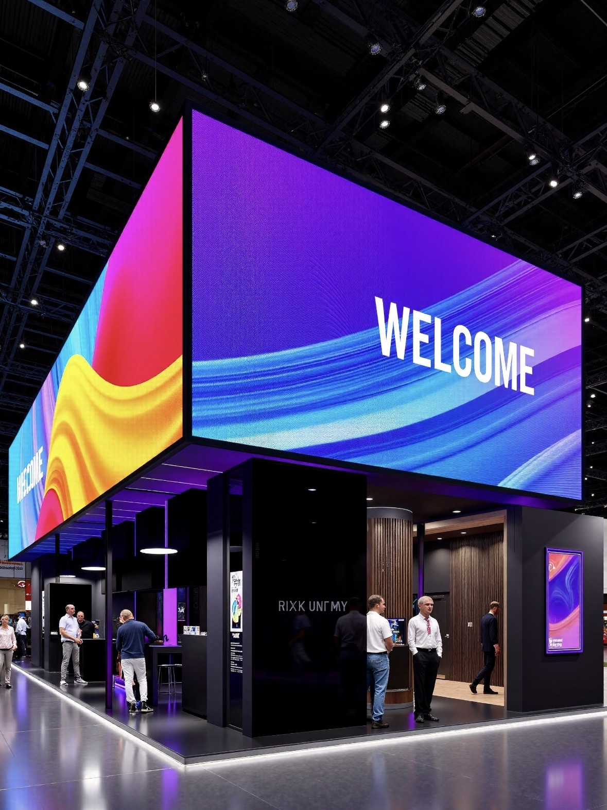

The meeting room has quietly become one of the largest LED categories in commercial interiors. Projectors fail the modern room on three counts: they wash out when the blinds are open, they cast shadows when a presenter stands in the beam, and their lamps dim over years of use. An LED wall fixes all three with a surface that is bright, self-illuminating, and stable.
Analysts who track corporate AV spending describe the same pattern in almost every office refresh: the projector is removed, the screen is enlarged, and the wall becomes the room's focal point. Once the display is a fixed surface rather than a projected image, the furniture layout changes too, because nobody has to sit inside a throw distance or avoid a shadow line.
The shift accelerated with hybrid work. A room that hosts video calls all day needs a display that reads well on camera, holds colour behind a speaker, and does not flicker at the shutter speed of a conference camera. LED walls handle those requirements better than projection, and at fine pitch they rival or beat large LCD panels on seams and shape.
This guide is written for facilities managers, AV integrators, and IT teams specifying a meeting room wall. It covers pitch selection by table distance, brightness and colour settings for enclosed rooms, integration with conferencing systems, and the practical details that decide whether the wall is easy to live with.
One early decision shapes everything else: is the screen primarily for in-room viewing, for the far end of a video call, or both? The answer changes the pitch, the brightness, and the processing far more than the floor area of the room does.
Budget is the other constraint. A meeting room wall is almost never the most expensive display in a building, but it is often the most used, so reliability and ease of operation deserve priority over the last increment of resolution.
Pitch should be chosen from the distance between the nearest seat and the wall, not from the room's floor area. A large room with a long table may still need a fine pitch, because the person at the head of the table sits close to the screen and will notice pixel structure immediately.
For a typical boardroom where the nearest seat is three metres from the wall, P1.2 to P1.5 is comfortable. In a smaller huddle room or an executive briefing centre where the closest viewer is under two metres, P0.9 to P1.2 keeps text crisp. In an auditorium where the front row is five metres back, P1.5 to P1.8 is usually enough.
Content decides the margin. A wall used mainly for spreadsheets, small fonts, and dense dashboards needs a finer pitch than one showing slide decks and video, because text breaks down before images do. Buyers should test with the actual content the room will run rather than a demo reel of flowers and landscapes.
Pixel pitch also sets cost, so over-specifying is a real risk. There is no benefit to a P0.9 wall viewed from five metres, and the money is better spent on better processing or a larger canvas. Match the pitch to the closest realistic viewing position and stop there.
Width matters too. A wide wall lets several windows sit side by side, which is how many teams actually use the room, so measure the content layout before fixing the cabinet count.
| Room Type | Nearest Seat | Suggested Pitch | Notes |
|---|---|---|---|
| Huddle room | 1.0 - 1.5 m | P0.9 - P1.2 | Text heavy, close viewing |
| Executive boardroom | 2.0 - 3.0 m | P1.2 - P1.5 | Camera facing, high contrast |
| Briefing centre | 2.0 - 4.0 m | P1.2 - P1.8 | Mixed content, hybrid calls |
| Training room | 3.0 - 5.0 m | P1.5 - P1.8 | Wide seating, slides and video |
| Auditorium | 5.0 m and beyond | P1.8 - P2.5 | Size matters more than pitch |
A meeting room needs far less brightness than a lobby or an outdoor screen, and too much light is a common mistake. Indoor panels are specified from 800 to 2,500 nits, but a darkened conference room may run comfortably at the bottom of that range, often at a few hundred nits of displayed output after the brightness is dialled down.
The reason to specify headroom is the daytime condition. When the blinds are open and the room is bright, the wall has to hold contrast against ambient light. A COB panel's sealed black surface absorbs stray light far better than an exposed-bead panel, which is why premium meeting room walls often use COB technology.
Glare is the other side of the problem. A glossy screen facing a window will mirror the window and distract the room. Specify an anti-reflective or matte surface treatment, and position the wall so that the primary window is not directly behind the seated viewers.
Colour temperature should be calibrated to the room lighting, typically around 6,500 K for a neutral presentation look. A wall that runs too blue looks clinical next to warm interior lighting, and one that runs too warm makes skin tones on a video call look off. Calibration at commissioning, with the room lights on, is worth the hour it takes.
Ambient light sensors can handle the daytime shift automatically. A sensor that raises or lowers output through the day keeps the wall readable without anyone reaching for a remote during a meeting.
| Requirement | Typical Setting | Capable Range | Comment |
|---|---|---|---|
| Display brightness | 300 nits | 800 - 2,500 nits capable | Dial down for comfort |
| Refresh rate | 3,840 Hz | 3,840 Hz and above | No flicker on camera |
| Contrast | 10,000:1 on COB | High contrast preferred | Holds up under window light |
| Colour temperature | 6,500 K | Neutral to slightly warm | Match interior lighting |
| Surface finish | Matte or anti-reflective | Depends on window position | Avoid mirror glare |
| Control | Room system integration | RS-232, LAN, or API | Single-touch source switching |
A meeting room wall is only useful if it works with the room's existing systems. The processor should accept HDMI and USB-C inputs, support HDCP, and expose a control interface the room controller can drive, so a user can switch sources without touching a remote.
Cabling is where many installs go wrong. Long HDMI runs from a table box to a wall processor are unreliable, so designers should place the processor close to the screen and use a single long fibre or HDBaseT link back to the table. Power and data should be planned together, with a dedicated circuit and a clean cable path inside the wall.
For video conferencing, the wall must present well on camera. That means no visible seams, no bead-grid moire, a refresh rate high enough to avoid banding, and a colour calibration that keeps skin tones natural. Fine-pitch COB panels satisfy these requirements more easily than exposed-bead panels of the same pitch.
Plan the day-two experience as well. A wall that defaults to the wrong input, or that takes a minute to wake, frustrates users at every meeting. Commission the room with a defined boot sequence, a home screen, and a documented source map, then train at least two staff members on basic operation and routine panel care.
Finally, leave service access. Even in a sealed interior wall, the design should allow a module to be replaced from the front without removing the surrounding joinery.
Asia Vision Technology supplies fine-pitch indoor LED for meeting rooms, briefing centres, and auditoriums, including the CV-PRO COB series with roughly 10,000:1 contrast for rooms that see window light. Panels run at 3,840 Hz or higher so video conferencing stays clean on camera.
We support integrators with cabinet drawings, control protocol documentation, and calibration guidance, and every order carries CE, FCC, and RoHS certification, a 3-year standard warranty, and a 15 to 20 working day production schedule.

For this requirement our range covers it directly: the RH-PRO fine-pitch COB (flagship, full redundancy) and the COB CV-PRO series (Ultra-HD fine pitch).